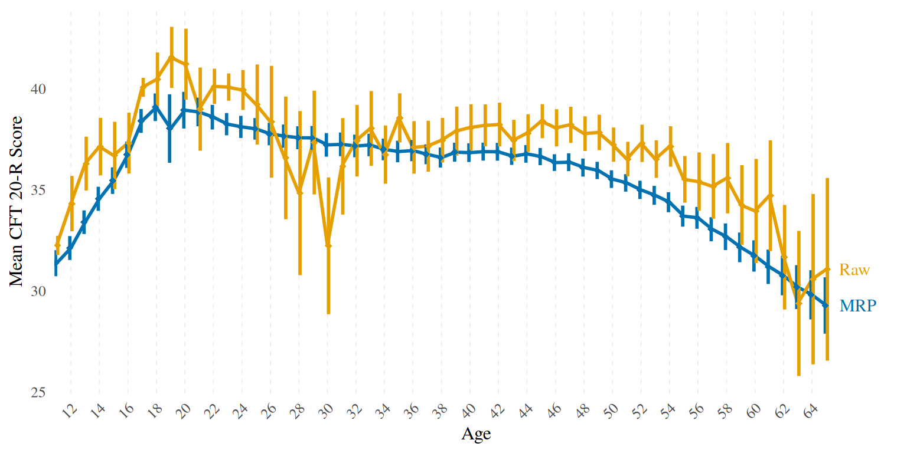
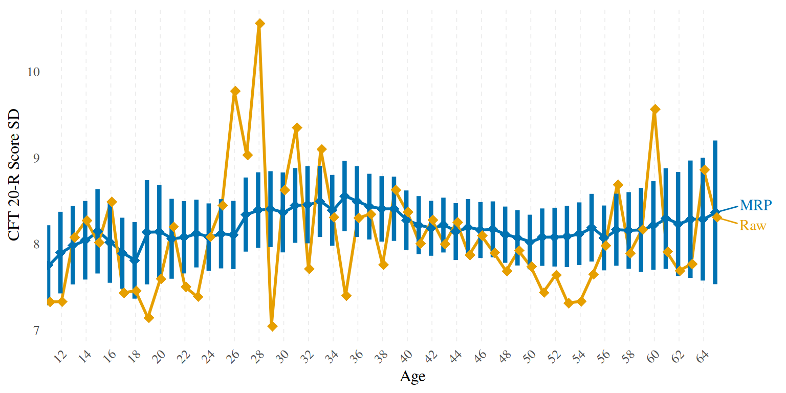
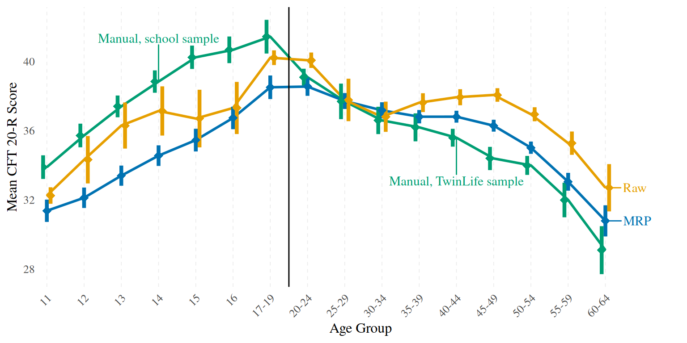
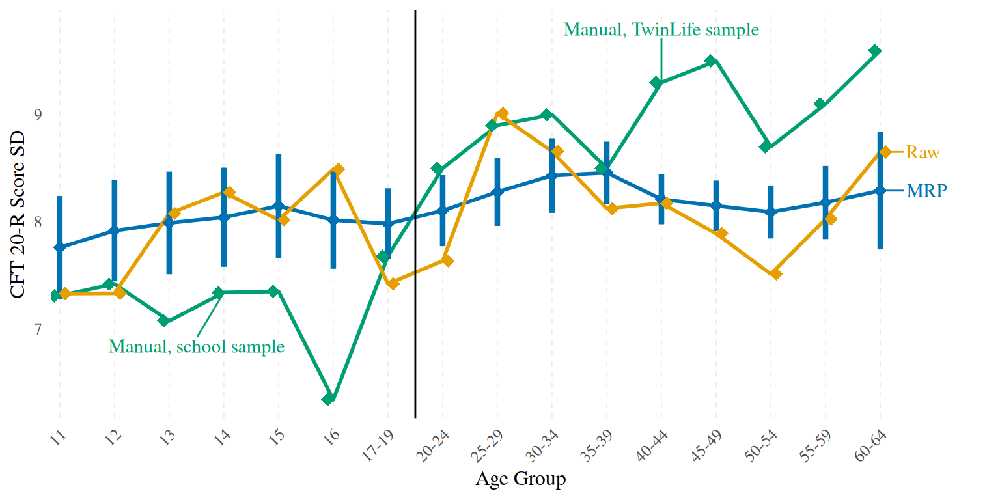

knitr::opts_chunk$set(
message = FALSE,
warning = FALSE,
include = TRUE,
error = TRUE,
fig.width = 8,
fig.height = 4
)Load dependencies and preprocessed datasets
library(tidyverse)
library(ggrepel)
load("../unshareable_data/preprocessed/tl.Rda")
load("../unshareable_data/preprocessed/manual_norms.Rda")
load("data/preprocessed/census.Rda")
sim_pop_sample_with_draws <- readRDS("data/simulated/sim_pop_sample_with_draws.rds")
options(scipen = 999,
digits = 4)
# windowsFonts(Times = windowsFont("Times New Roman"))
theme_set(theme_minimal(base_size = 12, base_family = "Times"))
# exclude first twins to avoid twin dependency issues and add variable containing the age groups from the manual
tl_no_1st_twins <- tl %>%
filter(ptyp != 1)means_sds_and_ses_MRP <- sim_pop_sample_with_draws %>%
group_by(age, .draw) %>%
summarise(mean_prediction = mean(.prediction),
sd_prediction = sd(.prediction)) %>%
group_by(age) %>%
summarise(MRP_mean = mean(mean_prediction),
MRP_se_of_mean = sd(mean_prediction),
MRP_sd = sqrt(mean(sd_prediction^2)),
MRP_se_of_sd = sd(sd_prediction))
means_sds_and_ses_tl <- tl_no_1st_twins %>%
group_by(age0100) %>%
summarise(Raw_n = n(),
Raw_mean = mean(cft, na.rm = T),
Raw_sd = sd(cft, na.rm = T),
Raw_se_of_mean = Raw_sd/sqrt(Raw_n)) %>%
rename(age = age0100)
means_ns_sds_and_ses <- means_sds_and_ses_MRP%>%
left_join(means_sds_and_ses_tl, by = "age") %>%
filter(age <= 65)
# Here you can browse both MRP and raw means, SDs, and SEs.
means_ns_sds_and_ses %>%
mutate(age = as.integer(age)) %>%
DT::datatable() %>%
DT::formatRound(columns = names(means_ns_sds_and_ses)[-c(1, 6)], digits = 2)means_ns_sds_and_ses_plot <- means_ns_sds_and_ses%>%
pivot_longer(-age, names_to = c("source", ".value"), names_pattern = "([^_]*)_(.*)")
means_ns_sds_and_ses_plot %>%
ggplot(aes(x = as.factor(age), y = mean, group = source, colour = source)) +
scale_x_discrete(breaks = seq(12, 64, by = 2),
expand = expansion(add = c(0, 5))) +
geom_line(linewidth = 1) +
geom_pointrange(shape = 18,
aes(ymin = mean - 1.96*se_of_mean, ymax = mean + 1.96*se_of_mean),
fatten = 3,
linewidth = 1,
position = position_dodge(width = 0.3)) +
geom_text_repel(
data = means_ns_sds_and_ses_plot %>% filter(age == 65),
aes(label = source), family = "Times", seed = 810, nudge_x = 1, hjust = 0) +
theme(
axis.text.x = element_text(angle = 45, hjust = 1),
panel.grid.major.y = element_blank(),
panel.grid.minor.y = element_blank(),
panel.grid.major.x = element_line(linetype = "dashed", size = 0.3),
legend.position = "none"
) +
scale_colour_manual(values = c("#0072b2", "#e69f00")) +
labs(x = "Age", y = "Mean CFT 20-R Score")
means_ns_sds_and_ses <- means_ns_sds_and_ses %>%
mutate(dif = MRP_mean - Raw_mean,
abs_dif = abs(MRP_mean - Raw_mean))
mean(means_ns_sds_and_ses$dif)## [1] -1.181mean(means_ns_sds_and_ses$abs_dif)## [1] 1.585t.test(means_ns_sds_and_ses$Raw_mean, means_ns_sds_and_ses$MRP_mean)##
## Welch Two Sample t-test
##
## data: means_ns_sds_and_ses$Raw_mean and means_ns_sds_and_ses$MRP_mean
## t = 2.4, df = 108, p-value = 0.02
## alternative hypothesis: true difference in means is not equal to 0
## 95 percent confidence interval:
## 0.2059 2.1568
## sample estimates:
## mean of x mean of y
## 36.80 35.62On average an absolute difference of ~ fifth of an SD between raw and corrected means.
means_ns_sds_and_ses_plot %>%
ggplot(aes(x = as.factor(age), y = sd, group = source, colour = source)) +
scale_x_discrete(breaks = seq(12, 64, by = 2),
expand = expansion(add = c(0, 5))) +
geom_line(linewidth = 1) +
geom_pointrange(shape = 18,
aes(ymin = sd - 1.96*se_of_sd, ymax = sd + 1.96*se_of_sd),
fatten = 6,
linewidth = 1.5,
position = position_dodge(width = 0.3)) +
geom_text_repel(
data = means_ns_sds_and_ses_plot %>% filter(age == 65),
aes(label = source), family = "Times", seed = 810, nudge_x = 2, hjust = 0) +
theme(
axis.text.x = element_text(angle = 45, hjust = 1),
panel.grid.major.y = element_blank(),
panel.grid.minor.y = element_blank(),
panel.grid.major.x = element_line(linetype = "dashed", size = 0.3),
legend.position = "none"
) +
scale_colour_manual(values = c("#0072b2", "#e69f00")) +
labs(x = "Age", y = "CFT 20-R Score SD")
Here we compare the MRP-based norms to the traditionally constructed norms reported in the CFT 20-R manual. We aggregate by the age groups as reported in the manual normal tables. Note that the manual means and SDs for ages 20 and older are based on the very same TwinLife sample we are using, they just use a different correction method that isn’t described in enough detail to make it reproducible for us.
means_sds_and_ses_MRP <- sim_pop_sample_with_draws %>%
mutate(age_group = case_when(
age == 11 ~ '11',
age == 12 ~ '12',
age == 13 ~ '13',
age == 14 ~ '14',
age == 15 ~ '15',
age == 16 ~ '16',
age >= 17 & age <= 19 ~ '17-19',
age >= 20 & age <= 24 ~ '20-24',
age >= 25 & age <= 29 ~ '25-29',
age >= 30 & age <= 34 ~ '30-34',
age >= 35 & age <= 39 ~ '35-39',
age >= 40 & age <= 44 ~ '40-44',
age >= 45 & age <= 49 ~ '45-49',
age >= 50 & age <= 54 ~ '50-54',
age >= 55 & age <= 59 ~ '55-59',
age >= 60 & age <= 64 ~ '60-64',
TRUE ~ NA_character_)) %>%
group_by(age_group, .draw) %>%
summarise(mean_prediction = mean(.prediction), sd_prediction = sd(.prediction)) %>%
summarise(MRP_mean = mean(mean_prediction),
MRP_se_of_mean = sd(mean_prediction),
MRP_sd = sqrt(mean(sd_prediction^2)),
MRP_se_of_sd = sd(sd_prediction)) %>%
filter(!is.na(age_group))
means_sds_and_ses_tl <- tl_no_1st_twins %>%
filter(!is.na(age_group)) %>%
group_by(age_group) %>%
summarise(Raw_n = n(),
Raw_mean = mean(cft, na.rm = T),
Raw_sd = sd(cft, na.rm = T),
Raw_se_of_mean = Raw_sd/sqrt(Raw_n))
means_sds_and_ses <- means_sds_and_ses_MRP %>%
left_join(means_sds_and_ses_tl, by = "age_group") %>%
left_join(manual_norms, by = "age_group")
means_sds_and_ses_plot <- means_sds_and_ses %>%
pivot_longer(-age_group, names_to = c("source", ".value"), names_pattern = "([^_]*)_(.*)")
# means and CIs
means_sds_and_ses_plot %>%
ggplot(aes(x = age_group, y = mean, group = source, colour = source)) +
scale_x_discrete(expand = expansion(add = c(0, 2))) +
geom_line(linewidth = 1) +
geom_pointrange(shape = 18,
aes(ymin = mean - 1.96*se_of_mean, ymax = mean + 1.96*se_of_mean),
fatten = 6,
linewidth = 1.5,
position = position_dodge(width = 0.3)) +
scale_colour_manual(values = c("#009e73", "#0072b2", "#e69f00")) +
geom_text_repel(
data = means_sds_and_ses_plot %>% filter(age_group == "60-64"),
aes(label = c("MRP", "Raw", "")),
family = "Times", seed = 810, nudge_x = .5, hjust = 0) +
labs(x = "Age Group", y = "Mean CFT 20-R Score") +
geom_text_repel(
data = means_sds_and_ses_plot %>% filter(age_group == "14"),
aes(label = c("", "", "Manual, school sample")),
family = "Times", seed = 810, nudge_y = 2.5) +
geom_text_repel(
data = means_sds_and_ses_plot %>% filter(age_group == "40-44"),
aes(label = c("", "", "Manual, TwinLife sample")),
family = "Times", seed = 810, nudge_y = -2.5) +
theme(
axis.text.x = element_text(angle = 45, hjust = 1),
panel.grid.major.y = element_blank(),
panel.grid.minor.y = element_blank(),
panel.grid.major.x = element_line(linetype = "dashed", size = 0.3),
legend.position = "none"
) +
geom_vline(xintercept = 7.5)
means_sds_and_ses_plot %>%
ggplot(aes(x = age_group, y = sd, group = source, colour = source)) +
scale_x_discrete(expand = expansion(add = c(0, 2))) +
geom_line(linewidth = 1) +
geom_pointrange(shape = 18,
aes(ymin = sd - 1.96*se_of_sd, ymax = sd + 1.96*se_of_sd),
fatten = 6,
linewidth = 1.5,
position = position_dodge(width = 0.3)) +
scale_colour_manual(values = c("#009e73", "#0072b2", "#e69f00")) +
geom_text_repel(
data = means_sds_and_ses_plot %>% filter(age_group == "60-64"),
aes(label = c("MRP", "Raw", "")),
family = "Times", seed = 810, nudge_x = .5, hjust = 0) +
labs(x = "Age Group", y = "Mean CFT 20-R Score") +
geom_text_repel(
data = means_sds_and_ses_plot %>% filter(age_group == "14"),
aes(label = c("", "", "Manual, school sample")),
family = "Times", seed = 810, nudge_y = -.5, nudge_x = -.5) +
geom_text_repel(
data = means_sds_and_ses_plot %>% filter(age_group == "40-44"),
aes(label = c("", "", "Manual, TwinLife sample")),
family = "Times", seed = 810, nudge_y = .5) +
theme(
axis.text.x = element_text(angle = 45, hjust = 1),
panel.grid.major.y = element_blank(),
panel.grid.minor.y = element_blank(),
panel.grid.major.x = element_line(linetype = "dashed", size = 0.3),
legend.position = "none"
) +
geom_vline(xintercept = 7.5) +
labs(x = "Age Group", y = "CFT 20-R Score SD") 
Rather than calculating IQs for all possible CFT 20-R scores (0-56), we restrict our calculations to those which occur in our data.
iq <- function(cft_score, mean, sd) {
iq_score <- ((cft_score - mean) / sd) * 15 + 100
return(iq_score)
}
iqs_linear <- tl_no_1st_twins %>%
filter(!is.na(age_group)) %>%
group_by(age_group, cft) %>%
summarise(n()) %>%
select(age_group, cft) %>%
left_join(select(means_sds_and_ses, c(Manual_mean, MRP_mean, Manual_sd, MRP_sd, age_group)), by = "age_group") %>%
mutate(MRP_IQ_linear = round(iq(cft, MRP_mean, MRP_sd)),
Manual_IQ_linear = round(iq(cft, Manual_mean, Manual_sd)),
IQ_linear_dif = MRP_IQ_linear - Manual_IQ_linear,
IQ_linear_dif_abs = abs(MRP_IQ_linear - Manual_IQ_linear))iqs_normalised <- sim_pop_sample_with_draws %>%
mutate(raw_score = round(.prediction),
age_group = case_when(
age == 11 ~ '11',
age == 12 ~ '12',
age == 13 ~ '13',
age == 14 ~ '14',
age == 15 ~ '15',
age == 16 ~ '16',
age >= 17 & age <= 19 ~ '17-19',
age >= 20 & age <= 24 ~ '20-24',
age >= 25 & age <= 29 ~ '25-29',
age >= 30 & age <= 34 ~ '30-34',
age >= 35 & age <= 39 ~ '35-39',
age >= 40 & age <= 44 ~ '40-44',
age >= 45 & age <= 49 ~ '45-49',
age >= 50 & age <= 54 ~ '50-54',
age >= 55 & age <= 59 ~ '55-59',
age >= 60 & age <= 64 ~ '60-64',
TRUE ~ NA_character_)) %>%
filter(!is.na(age_group)) %>%
group_by(age_group, .draw) %>%
mutate(percentile = ecdf(raw_score)(raw_score)) %>%
mutate(iq_score_tr_ag = qnorm(percentile) * 15 + 100) %>%
group_by(age_group, raw_score) %>%
summarise(percentile = mean(percentile),
iq_score_tr_ag = mean(iq_score_tr_ag)) %>%
mutate(iq_score_tr_ag = ifelse(is.finite(iq_score_tr_ag), iq_score_tr_ag, NA),
iq_score_ag_tr = qnorm(percentile) * 15 + 100,
MRP_IQ_normalised = round(coalesce(iq_score_tr_ag, iq_score_ag_tr))) %>%
select(age_group, raw_score, MRP_IQ_normalised) %>%
rename("cft" = raw_score)iq_table <- iqs_linear %>%
left_join(iqs_normalised, by = c("age_group", "cft")) %>%
mutate(IQ_MRP_abs_dif = abs(MRP_IQ_linear - MRP_IQ_normalised),
Manual_kids_sample = ifelse(age_group %in% c("11", "12", "13", "14", "15", "16", "17-19"), TRUE, FALSE))
mean(iq_table$IQ_linear_dif_abs)## [1] 4.402mean(iq_table$IQ_MRP_abs_dif)## [1] 1.52iq_table %>% group_by(Manual_kids_sample) %>% summarise(mean(IQ_linear_dif_abs))## # A tibble: 2 × 2
## Manual_kids_sample `mean(IQ_linear_dif_abs)`
## <lgl> <dbl>
## 1 FALSE 2.29
## 2 TRUE 7.60sessionInfo()## R version 4.2.2 (2022-10-31)
## Platform: x86_64-pc-linux-gnu (64-bit)
## Running under: Rocky Linux 8.8 (Green Obsidian)
##
## Matrix products: default
## BLAS/LAPACK: /software/all/FlexiBLAS/3.2.1-GCC-12.2.0/lib64/libflexiblas.so.3.2
##
## locale:
## [1] LC_CTYPE=en_US.UTF-8 LC_NUMERIC=C
## [3] LC_TIME=en_US.UTF-8 LC_COLLATE=en_US.UTF-8
## [5] LC_MONETARY=en_US.UTF-8 LC_MESSAGES=en_US.UTF-8
## [7] LC_PAPER=en_US.UTF-8 LC_NAME=C
## [9] LC_ADDRESS=C LC_TELEPHONE=C
## [11] LC_MEASUREMENT=en_US.UTF-8 LC_IDENTIFICATION=C
##
## attached base packages:
## [1] stats graphics grDevices datasets utils methods base
##
## other attached packages:
## [1] ggrepel_0.9.4 forcats_1.0.0 stringr_1.5.1 dplyr_1.1.4
## [5] purrr_1.0.2 readr_2.1.4 tidyr_1.3.0 tibble_3.2.1
## [9] ggplot2_3.4.4 tidyverse_1.3.2
##
## loaded via a namespace (and not attached):
## [1] Rcpp_1.0.11 lubridate_1.9.3 digest_0.6.33
## [4] utf8_1.2.4 R6_2.5.1 cellranger_1.1.0
## [7] backports_1.4.1 reprex_2.0.2 evaluate_0.23
## [10] highr_0.10 httr_1.4.7 pillar_1.9.0
## [13] rlang_1.1.2 googlesheets4_1.1.1 readxl_1.4.3
## [16] rstudioapi_0.15.0 jquerylib_0.1.4 DT_0.30
## [19] rmarkdown_2.25 labeling_0.4.3 googledrive_2.1.1
## [22] htmlwidgets_1.6.3 munsell_0.5.0 broom_1.0.5
## [25] compiler_4.2.2 modelr_0.1.11 xfun_0.41
## [28] pkgconfig_2.0.3 htmltools_0.5.7 tidyselect_1.2.0
## [31] fansi_1.0.5 crayon_1.5.2 tzdb_0.4.0
## [34] dbplyr_2.4.0 withr_2.5.2 grid_4.2.2
## [37] jsonlite_1.8.7 gtable_0.3.4 lifecycle_1.0.4
## [40] DBI_1.1.3 magrittr_2.0.3 scales_1.2.1
## [43] cli_3.6.1 stringi_1.8.2 cachem_1.0.8
## [46] farver_2.1.1 renv_1.0.3 fs_1.6.3
## [49] xml2_1.3.5 bslib_0.6.0 ellipsis_0.3.2
## [52] generics_0.1.3 vctrs_0.6.4 tools_4.2.2
## [55] glue_1.6.2 hms_1.1.3 crosstalk_1.2.1
## [58] fastmap_1.1.1 yaml_2.3.7 timechange_0.2.0
## [61] colorspace_2.1-0 gargle_1.5.2 rvest_1.0.3
## [64] knitr_1.45 haven_2.5.3 sass_0.4.7